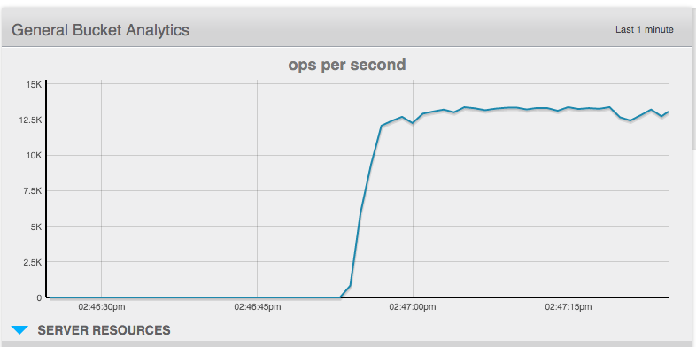
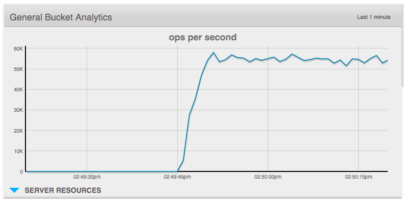

Bulk operations
Describes how to operate on more than one document at the same time.
Introduction
The Java SDK 1.4 and earlier had explicit methods for batch operations, that is operate on more than one document at the same time. They have been removed from both the sync and async APIs on this SDK, but we are planning to bring them back in the 2.1 release.
We understand that there is a need to perform all kinds of operations in batches to get beter resource utilization, and there is a very good way to do it right now. Because of the asynchronous nature of the underlying core package, we can utilize RxJava's operations to provide implict batching facilities combined with the asynchronous operations of the SDK.
If you understand the general approach to batching, you can apply it to any operation against the SDK, not just with get() calls like in the 1.* series.
Batching with RxJava
- Observable.just() or Observable.from() to generate an Observable that contains the data we want to batch on.
- flatMap() to send those events against the Couchbase Java SDK and merge the results asynchronously.
- last() if we want to wait until we receive the last element of the batch.
- toList() if we care about the responses and want to aggregate it easily.
- If we have more than one subscriber, using cache() to prevent accessing the network over and over again with every subscribe.
The following example creates an Observable stream of 5 keys (which we want to load in a batch), asynchronously fires off get() requests against the SDK, waits until the last result has arrived, and then converts the result into a list and blocks at the very end:
Cluster cluster = CouchbaseCluster.create();
Bucket bucket = cluster.openBucket();
List<JsonDocument> foundDocs = Observable
.just("key1", "key2", "key3", "key4", "key5")
.flatMap(new Func1<String, Observable<JsonDocument>>() {
@Override
public Observable<JsonDocument> call(String id) {
return bucket.async().get(id);
}
})
.toList()
.toBlocking()
.single();Note that this will return you always a list, but it may contain 0 to 5 documents, depending on how much are actually found. Also, at the very end we are converting the Observable into a blocking one, but everything before that, including the network calls and the aggregation, is happening completely asynchronously.
Inside the SDK, this provides much more efficient resource utilization because the requests are very quickly stored in the internal Request RingBuffer and the IO threads are able to pick batches as large as they can. Afterwards, whatever server returns a result first it is stored in the list, so there are is no serialization of responses going on.
If you wrap the code in a helper method, you can provide very nice encapsulated batching semantics:
public List<JsonDocument> bulkGet(final Collection<String> ids) {
return Observable
.from(ids)
.flatMap(new Func1<String, Observable<JsonDocument>>() {
@Override
public Observable<JsonDocument> call(String id) {
return bucket.async().get(id);
}
})
.toList()
.toBlocking()
.single();
}Batching mutations
In the previous Java SDK, we did only provide bulk operations for get(). With the techniques shown above, you are able to perfom any kind of operation as a batch.
The following code generates a number of fake documents and inserts them in one batch. Note that you can decide to either collect the results with toList() as shown above or just use last() as shown here to wait until the last document is properly inserted.
// Generate a number of dummy JSON documents
int docsToCreate = 100;
List<JsonDocument> documents = new ArrayList<JsonDocument>();
for (int i = 0; i < docsToCreate; i++) {
JsonObject content = JsonObject.create()
.put("counter", i)
.put("name", "Foo Bar");
documents.add(JsonDocument.create("doc-"+i, content));
}
// Insert them in one batch, waiting until the last one is done.
Observable
.from(documents)
.flatMap(new Func1<JsonDocument, Observable<JsonDocument>>() {
@Override
public Observable<JsonDocument> call(final JsonDocument docToInsert) {
return bucket.async().insert(docToInsert);
}
})
.last()
.toBlocking()
.single();Performance
Here are two code samples, both synchronous, which showcase serialized and batched loading of documents. Note that more important than the absolute operations per second is the relative improvement with the same workload.
// Serialized workload of loading documents
while(true) {
List<JsonDocument> loaded = new ArrayList<JsonDocument>();
int docsToLoad = 10;
for (int i = 0; i < docsToLoad; i++) {
JsonDocument doc = bucket.get("doc-" + i);
if (doc != null) {
loaded.add(doc);
}
}
}
// Same workload, utilizing batching effects
while(true) {
int docsToLoad = 10;
Observable
.range(0, docsToLoad)
.flatMap(new Func1<Integer, Observable<?>>() {
@Override
public Observable<?> call(Integer i) {
return bucket.async().get("doc-"+i);
}
})
.toList()
.toBlocking()
.single();
}